斜面坡度要小（延长下滑时间、便于计时）；金属片让小车在同一位置停下，使路程与时间对应；v=s/t，上半程/下半程/全程要分别测

同一小车从同一斜面同一高度由静止滑下（到达水平面时初速度相同）；水平面越光滑，小车滑得越远；由此推理：若不受阻力将做匀速直线运动

木块被撞后滑行的距离反映动能大小（转换法）；同一钢球从不同高度滑下改变速度，不同质量钢球从同一高度滑下改变质量（控制变量）
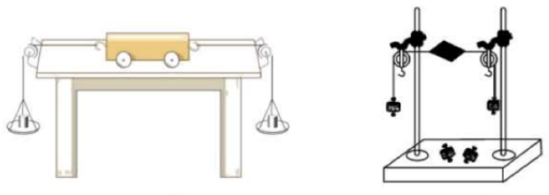
通过改变两侧钩码数量改变拉力大小；把小车扭转一个角度后松手，看能否平衡（探究是否同一直线）；小卡片可忽略重力影响
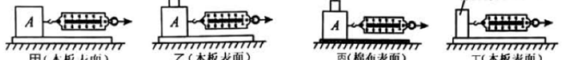
必须水平匀速拉动木块，此时拉力与摩擦力二力平衡，示数才等于摩擦力；加砝码改变压力、换表面改变粗糙程度（控制变量）
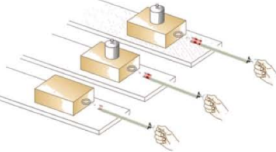
同一木块加不同砝码，读数随之变大——说明摩擦力随压力增大；换粗糙表面读数变大——说明与接触面粗糙程度有关
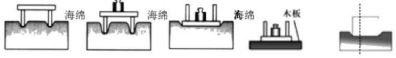
用海绵是因为形变明显、便于比较（也可换沙子、橡皮泥）；同一小桌正放/倒放改变受力面积，加砝码改变压力；压力越大、受力面积越小，作用效果越明显

U 形管两侧液面高度差反映压强大小（转换法）；同一深度朝各方向高度差相同；深度越大高度差越大；换盐水（密度大）高度差变大
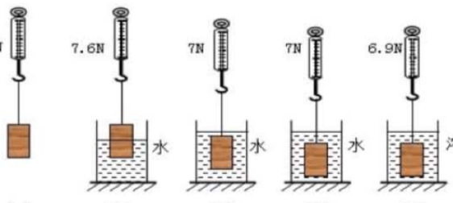
F浮=G−F示；物体浸入体积越大示数越小；浸没后继续下沉示数不变（浮力与深度无关）；换盐水示数更小（液体密度越大浮力越大）

溢水杯要先装满水，否则排出的水偏少；先测空桶重力，再测桶和排开的水；结论 F浮=G排

先调平衡螺母使杠杆在水平位置平衡（便于直接读力臂）；F1l1=F2l2；弹簧测力计斜拉时力臂变小、示数变大
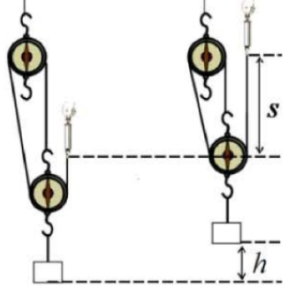
竖直匀速拉动弹簧测力计；s=nh；η=W有/W总=Gh/Fs；同一滑轮组提升的物重越大，机械效率越高

同一重物、同一滑轮组，改变绕法只改变绳子段数 n（s=nh、F=G/n）；比较机械效率可以说明效率与绕法无关、与动滑轮重和摩擦有关
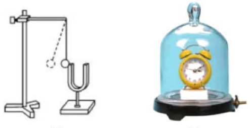
乒乓球被弹开说明音叉在振动（把微小振动放大，转换法）；抽气后铃声变小、推理真空不能传声（实验+推理）
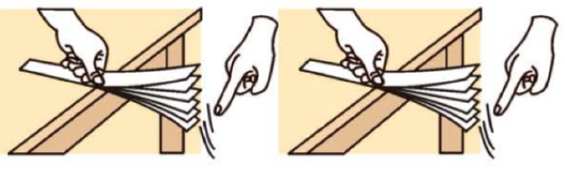
钢尺伸出桌边越长，振动越慢、音调越低；拨动幅度越大，响度越大——音调由频率决定，响度由振幅决定

水浴法让物质受热均匀、升温缓慢便于记录；温度计玻璃泡浸没在固体中且不碰管底管壁；晶体熔化时吸热但温度不变（图象有水平段），非晶体没有
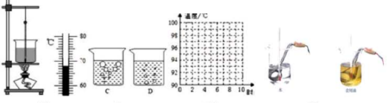
自下而上组装；温度计玻璃泡浸没水中不碰底壁；加纸板减少热损失；沸腾时继续吸热但温度不变；沸点随气压升高而升高
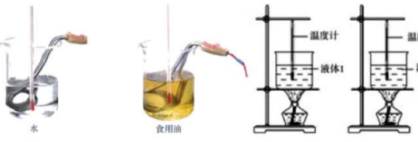
用规格相同的电加热器（或相同酒精灯）保证相同时间吸收热量相同；取质量、初温相同的水和油；升温慢的比热容大
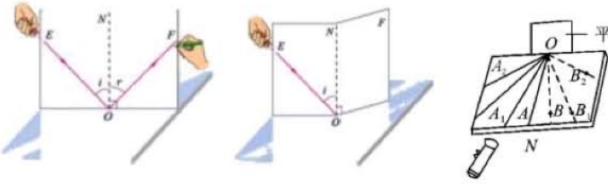
纸板要竖直立在平面镜上；把纸板 NOF 向前或向后折，看不到反射光线——说明三线共面；反射角等于入射角，角都从法线量起
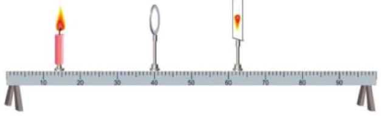
蜡烛、凸透镜、光屏三者中心在同一高度；u>2f 成倒立缩小实像，f


天平放水平台、游码归零、调平衡螺母；左物右码；量筒读数视线与凹液面最低处相平；先测质量后测体积，避免石块沾水使质量偏大
先测烧杯和液体的总质量 m1，倒一部分进量筒读体积 V，再测剩余的质量 m2；ρ=(m1−m2)/V，这样避免液体残留量筒带来的误差
把不同规格的合金丝依次接入电路，比较电流表示数（或灯泡亮度）反映电阻大小（转换法）；每次只改变一个因素（控制变量）
滑动变阻器串联在电路中，闭合开关前滑片移到阻值最大处；探究 I-U 时保持 R 不变，探究 I-R 时保持定值电阻两端电压不变
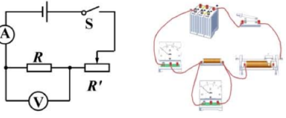
电压表并联在待测电阻两端、电流表串联；R=U/I；定值电阻多次测量求平均值以减小误差，小灯泡的电阻随温度变化不能求平均
P=UI；移动滑片使电压表示数等于额定电压时测的就是额定功率；滑动变阻器既保护电路又改变灯泡两端电压
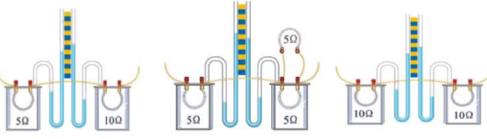
U 形管两侧液面高度差反映产生热量的多少（转换法）；串联保证电流和通电时间相同，比较不同电阻；并联可比较不同电流
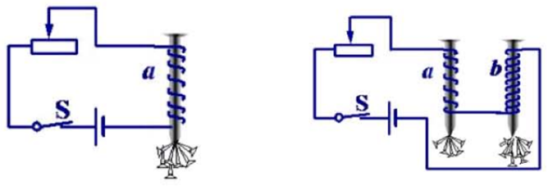
吸引大头针的数量反映磁性强弱（转换法）；移动滑片改变电流看吸引起伏，换匝数不同的电磁铁比较——电流越大、匝数越多，磁性越强
原理图 / 光路图（principle）15

法线是过入射点垂直于镜面的虚线；入射角、反射角都从法线量起；反射光线与入射光线分居法线两侧，反射角等于入射角，光路可逆
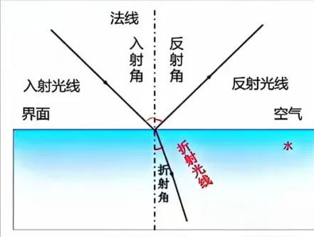
光从空气斜射入水中时折射光线向法线偏折，折射角小于入射角；垂直入射时传播方向不变；折射时光路也可逆
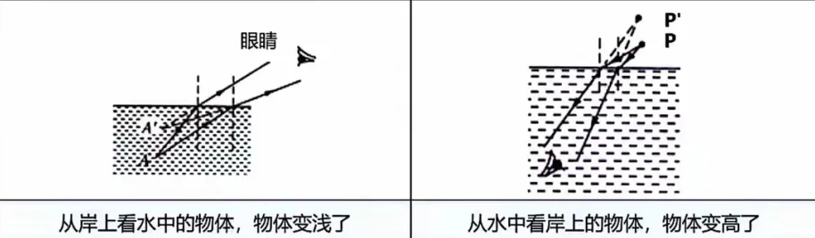
看到的都是折射形成的虚像：从岸上看水中物体，像的位置比实际浅；从水中看岸上物体，像的位置比实际高；画图时两条光线要都进入眼睛

近地面温度高、上层温度低，空气密度（折射率）连续变化，光沿曲线传播；人眼仍按直线判断，于是看到远处景物的虚像
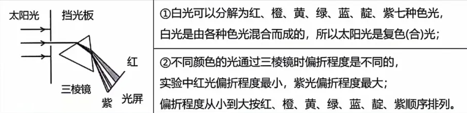
白光通过三棱镜后分解为红橙黄绿蓝靛紫；紫光偏折程度最大、红光最小；说明白光是复色光（不同色光折射率不同）

凸透镜中间厚边缘薄，对光有会聚作用；凹透镜中间薄边缘厚，对光有发散作用；画图时平行于主光轴的光线过焦点（或其反向延长线过虚焦点）
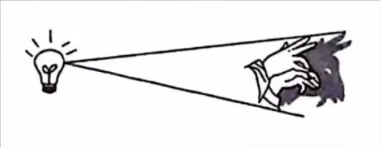
光沿直线传播，不透明物体挡住光线在其后形成影子；影子边界由光源大小决定——点光源影子清晰
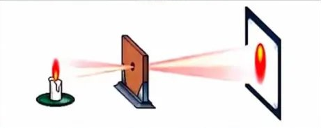
光沿直线传播，上部的光射到屏的下部，所以像是倒立的实像；像的形状与孔的形状无关，孔越小像越清晰、越暗
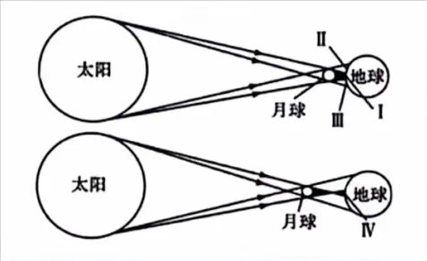
月球运行到太阳和地球之间，挡住了射向地球的太阳光；本影区看到日全食，半影区看到日偏食
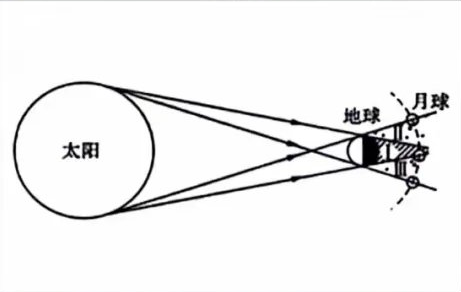
地球运行到太阳和月球之间，地球的影子落在月球上；月球进入本影区发生月全食，进入半影区发生月偏食
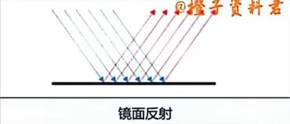
平行光射到光滑表面后反射光仍平行，只有处在反射光方向的人才能看到刺眼的光；镜面反射同样遵守反射定律

凹凸不平的表面把平行光反射到各个方向，所以能从各个角度看到不发光的物体；每条光线仍遵守反射定律
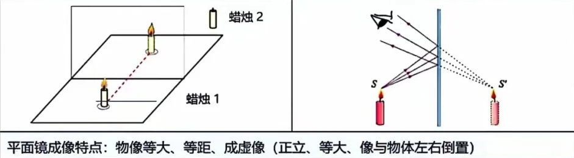
像与物大小相等、到镜面距离相等、连线与镜面垂直、是虚像（光屏接不到）；实验用玻璃板代替平面镜是为了看到背后的蜡烛、确定像的位置
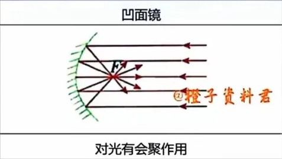
平行光射到凹面镜上被会聚到焦点；应用：太阳灶、手电筒反光碗、汽车前灯（把光源放在焦点上得到平行光）
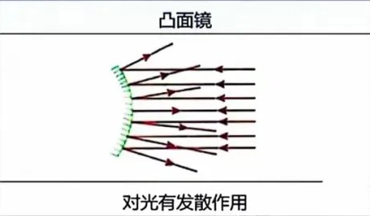
平行光射到凸面镜上被发散，反向延长线交于虚焦点；凸面镜能扩大视野，用作汽车后视镜、路口反光镜